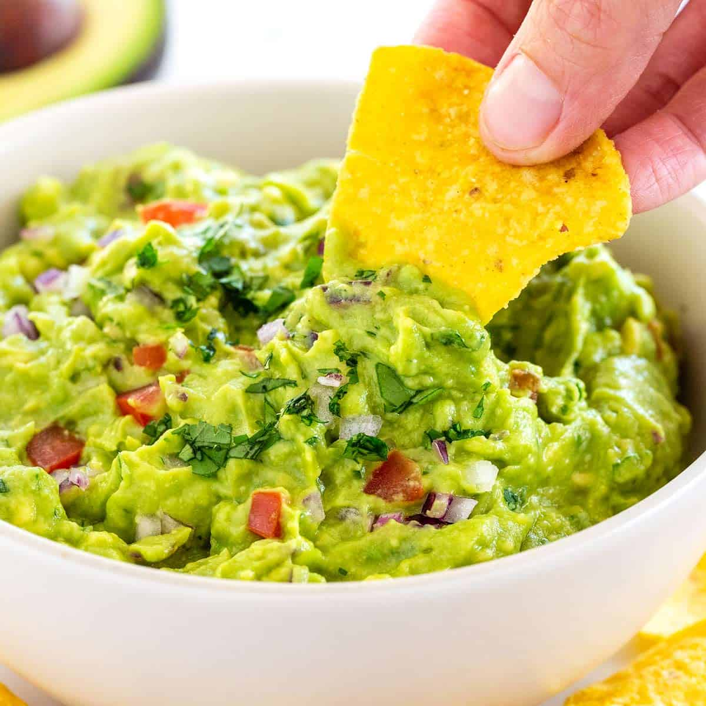

Guacamole

About:
Guacamole is a mexican dish with avocado as primary ingredient. It is a very
tasty and hearty dish popular in North America, particularly in US where it
is often referred to as "Guac". Most commonly guacamole is
eaten as dip for nacho chips, but can also be served as a salad.
Ingredients:
- 2 avocados peeled and pitted
- 1 cup chopped tomatoes
- 1/4 cup chopped onion
- 1/4 cup chopped cilatro
- 2 table spoons fresh lime or lemon juice
- 1 jalapeno pepper seeded and minced
- salt and ground black pepper to taste
Directions:
- Mash avocados in a bowl until creamy.
- Mix avocado mash with all other ingredients
well. Season with salt and black pepper.
Nutrition facts
- 177 calories
- 2.7g protein
- 12.2g carbohydrates
- 14.9g fat
- 49.9mg sodium
recipes homepage